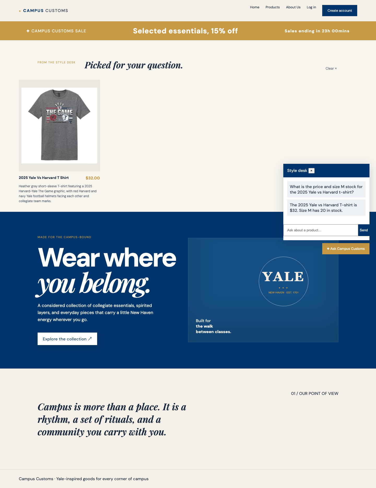
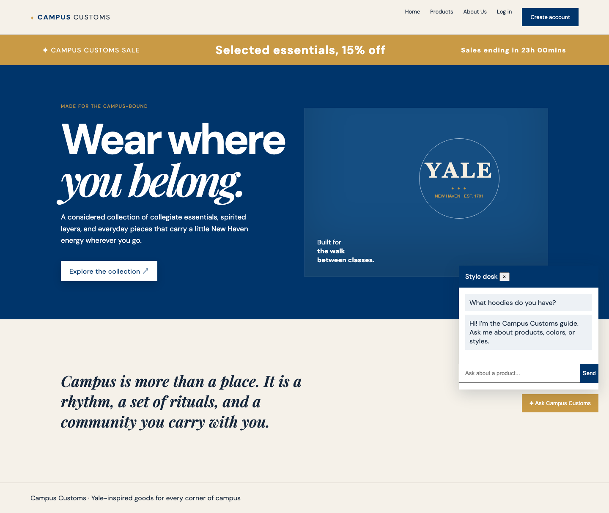

Campus Customs live app checks
These screenshots were captured from the running Vite site and FastAPI backend. Each check records a visible behavior and its evidence.
1. Chat checks inventory and price
The shopper asks for the 2025 Yale vs Harvard T-shirt and size M stock. The chat response shows the database-backed price and quantity rather than an invented value.

2. Category question creates product cards
The shopper asks what hoodies are available. The structured product matches returned by the agent appear on the page with images, names, prices, and short descriptions.

3. Seasonal collection filter
The Products page categorizes catalogue items into Spring / Summer and Autumn / Winter, with a filter that narrows the visible collection without leaving the page.